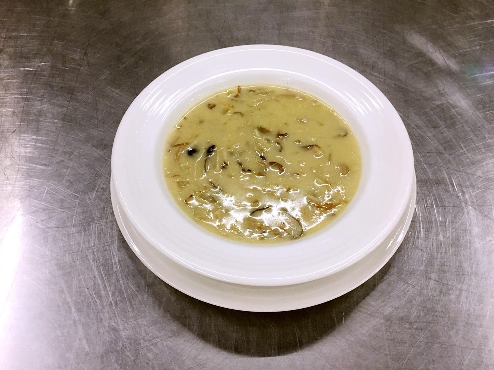

>

奶油蘑菇濃湯
| 號碼 |
材料 |
重量 |
| 01 |
蘑菇 |
適量 |
| 02 |
生香菇 |
適量 |
| 03 |
柳松菇 |
適量 |
| 04 |
金針菇 |
適量 |
| 05 |
杏鮑菇 |
1支 |
| 06 |
洋蔥 |
1/4顆 |
| 07 |
橄欖油 |
3大匙 |
| 08 |
麵粉 |
3大匙 |
| 09 |
水 |
1000cc |
| 10 |
雞粉 |
2匙 |
| 11 |
胡椒粉 |
1/2匙 |
| 12 |
鹽 |
1/2匙 |
| 13 |
鮮奶油 |
3匙 |
- 蘑菇切片、生香菇切片、柳松菇、金針菇各對切、杏鮑菇對切再切粗條、洋蔥切末。
- 平底鍋加熱，入菇類煸出水分，至金黃色加入洋蔥及橄欖油15克拌炒至香氣釋出，關火備用。
- 湯鍋加橄欖油、麵粉攪拌均勻，加入水、雞粉、胡椒粉 丶鹽稍煮，倒入作法2煮滾，再加鮮奶
油煮20分鐘至湯濃稠即可。